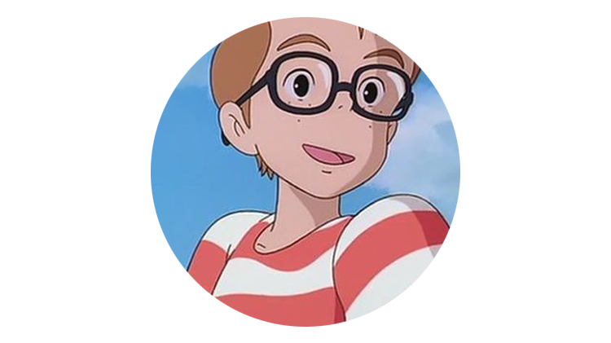

NEWS/STORY/CHARACTER/MOVIE/REVIEW
키키｜지지｜코포리

코포리/コポリ
키키가 정착한 마을의 남자 친구로 하늘을 날고 싶어한다. 코포리가 본명이고, 톰보는 애칭이다.
키키가 마을에 왔을 때부터 관심을 보이며 친해지려 해 키키를 파티에 초대하고 기다리지만 문제가 생겨 키키에게 바람맞는다.
이후 오소노가 키키에게 '코포리'에게 물건을 전해 달라고 부탁하는데, 본명을 들은 적 없는 키키는 그 사람이 톰보란 사실을 알 리가 없었고 알고 보니 둘의 화해를 위해 오소노가 꾸민 일임을 깨닫게 된다. 키키가 처음으로 마을에서 사귄 친구이며, 처음 만났을 때는 서먹했지만 꾸준히 다가간 결과, 키키가 마음을 열어 소중한 친구가 된다.
발명가 기질이 있는지 사람만한 크기의 프로펠러가 달린 자전거를 만들고 키키를 태우는데 자전거 체인이 바퀴가 아닌 프로펠러에만 달려서인지 평지에선 형편없는 속도를 보여주지만, 내리막길에서는 가속이 붙자 꽤 빠른 속도를 보여주며 살짝 뜨기까지 한다.
결국 프로펠러가 날아가 망가지지만, 엔딩에선 이걸 기반으로 더 큰 자전거 비행기를 만들어 키키와 함께 하늘을 난다.
이후 오소노가 키키에게 '코포리'에게 물건을 전해 달라고 부탁하는데, 본명을 들은 적 없는 키키는 그 사람이 톰보란 사실을 알 리가 없었고 알고 보니 둘의 화해를 위해 오소노가 꾸민 일임을 깨닫게 된다. 키키가 처음으로 마을에서 사귄 친구이며, 처음 만났을 때는 서먹했지만 꾸준히 다가간 결과, 키키가 마음을 열어 소중한 친구가 된다.
발명가 기질이 있는지 사람만한 크기의 프로펠러가 달린 자전거를 만들고 키키를 태우는데 자전거 체인이 바퀴가 아닌 프로펠러에만 달려서인지 평지에선 형편없는 속도를 보여주지만, 내리막길에서는 가속이 붙자 꽤 빠른 속도를 보여주며 살짝 뜨기까지 한다.
결국 프로펠러가 날아가 망가지지만, 엔딩에선 이걸 기반으로 더 큰 자전거 비행기를 만들어 키키와 함께 하늘을 난다.